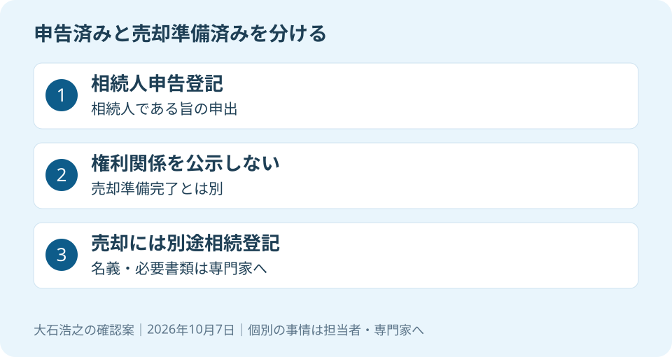

大石浩之（磐田市／不動産業）です。「法務局で申告を済ませたから、実家の名義も売却できる形になった」。そう考える前に、手続きの正式な名前を確認してください。相続人申告登記と相続登記は、名前が似ていても役割が違います。
相続人申告登記だけでは、売却の登記は整わない
法務省の「相続人申告登記について」は、申告登記が不動産の権利関係を公示するものではないと説明しています。公示とは、誰がどの権利を持つかを登記で外部に示すことです。相続した不動産の売却や抵当権設定には、別途相続登記の申請が必要です。
法務省によれば、相続人申告登記は2024年4月1日の相続登記申請義務化に伴い創設された制度です。2026年に始まった制度ではありません。この記事は2026年10月7日に公式説明を確認しています。
意外な点は、「登記」という名前の手続きを済ませても、売却に必要な権利関係の整理が終わるとは限らないことです。申告では、自分が登記記録上の所有者の相続人であることなどを申し出ます。手続きの目的を分けると、次に必要な確認が見えてきます。
国土交通省は毎年10月を土地月間と案内しています。2026年10月は、実家の書類を見直すきっかけにできます。ただし、土地月間そのものが申告や売却の期限になるわけではありません。期限の扱いは家ごとに専門家へ確認します。

申告制度の良い点と、家族に残したい説明
相続人申告登記には、特定の相続人が単独で申し出られる特徴があります。法務省は、オンラインでの手続きが可能で、登録免許税がかからないことも案内しています。直ちに遺産分割や相続登記の申請が難しい場合などに、義務を果たすための制度です。
私は、家族の話し合いが整わない段階でも対応の道筋がある点を評価します。全員の予定が合うまで、何もできないと思い込まずに済むからです。書類の収集を始めるきっかけにもなり、本人が今できる手続きを専門家と検討できます。
その上で注文したいのは、手続きが済んだときに「何がまだ残るか」も説明することです。申告の完了だけを家族へ伝えると、売却契約の日程まで決めてよいと受け取られかねません。私は、申告済みと売却準備済みの二つの欄を作り、同じ丸をつけないようにします。
法務省は、遺産分割に基づく相続登記の申請義務を、相続人申告登記では履行できないとも明記しています。遺産分割とは、相続した財産をどう分けるか決めることです。話し合いが整った後には、その内容に応じた登記の確認が残ります。
期限を扱う際は、相続登記の期限と磐田・袋井での確認手順も参照してください。今回の主題は、申告完了と売却準備の取り違えです。いつから期限を数えるか、本人の義務を果たせているかは司法書士などの専門家に確認を。
書類は「申告」「現在の登記」「分け方」に分ける
相続人申告登記を終えた実家の売却相談では、私は書類を三つに分けて持参する方法を提案します。何を済ませ、どこが未確認かを専門家へ伝えるためです。全部そろわない場合も、不足する書類の名前を質問として残せます。
| 資料の組 | 相談時に確かめること |
|---|---|
| 申告した手続きの控え | 誰が、どの土地・建物について申し出たか |
| 現在の登記記録 | 土地と建物の名義、対象物件の一致 |
| 遺言や遺産分割に関する資料 | 誰が取得する予定か、未確定の点は何か |
控えに書かれた地番や家屋番号と、売ろうとしている物件を照合します。普段使う住所だけで、土地も建物もすべて同じ申告の対象だったと判断しないでください。手元の資料が一部しかない場合は、そのまま司法書士へ示し、確認すべき登記記録を聞きます。
家族の一人が申告したことと、家族全員の手続きが済んだことも同じではありません。法務省は他の相続人の分も含めた代理申出を認めていますが、実際に誰の分を申し出たかは控えで確認する必要があります。「兄が行った」という記憶だけで済ませないのが私の提案です。
自分でどこまで進めるかを考える方は、相続登記を自分でする場合と司法書士へ頼む場合を参考にできます。この記事の表は法務局への必要書類一覧ではありません。個別の登記方法と提出書類は専門家に確認を。
登記の費用と、売却の予定をつなげる
相続人申告登記の登録免許税がかからなくても、後の相続登記まで無料になるわけではありません。私は、申告の費用と売却に向けた登記の見積りを分けて確認します。証明書の取得費や専門家へ依頼する報酬も、登録免許税とは別の項目です。
司法書士への質問は、「いくらですか」だけで終えません。誰の名義へ移す前提の見積りか、資料収集はどこまで含むか、未確定の事情で追加作業が生じるかを聞きます。安い総額でも、前提が違えば売却手取りの比較には使えません。
売却の日程は、買主へ所有権を移すための準備が整う見通しと合わせます。申告の受付日だけで引渡日を約束しないのが私の判断です。契約前に何を確定させるか、登記申請をどう組むかは、担当する司法書士と仲介会社で確認します。
査定相談や現地確認については、登記手続きと並行して進められる範囲を相談できます。ただし、価格を知ることと、売買契約を結ぶことは別です。私は、名義が未整理でも相場感を知りたい気持ちを受け止めつつ、契約の見通しを安易に約束しません。
家族の意見がまだ揃わないとき、先に費用をかける範囲には私も迷います。だからこそ、相談、資料取得、申請代理を分け、段階ごとに依頼の範囲を決めたいのです。相続関係に争いがある場合の判断を、不動産の査定額で代替することはできません。
磐田の実家で、今日確認するのは手続きの名前
磐田市・袋井市の実家を相続した家族は、手元の控えに書かれた手続きの正式名を今日確認してください。相続人申告登記なのか、所有権移転の相続登記なのかを区別するだけで、次の相談の質問が具体的になります。
私はこう考えます。家族で実家の書類を囲む場面なら、最初に売出価格を書かず、申告の控えを一枚置きます。次に、土地と建物の欄を別々に作り、どこまで確認できたかを記します。空欄はその日に無理に埋めず、司法書士へ聞く質問として残します。これは実際の相談の再現ではなく、私の提案です。「まだ売るか決めない」と「名義も調べない」を一緒にしないための段取りです。
相談の担当を分けたい場合は、相続不動産の相談先を磐田で比較した記事へ進めます。登記、税金、家族間の権利、販売条件を一人の担当にまとめて判断してもらう必要はありません。質問ごとに資格と担当を分けます。
介護施設の運営から不動産事業を始めた富士ヶ丘サービスのような窓口なら、介護と実家の使い道を一体で相談する選択肢があります。磐田・袋井で家族が困らない売却のため、私は、売る決断より先に未確認の欄を一つ減らすよう案内します。税務・登記・相続の個別判断は専門家に確認を。